Объектно-ориентированное программирование
WPF. Работа с редактором
Содержание лекции
Оконные приложения
Для создания приложений с графическим интерфейсом в .NET Framework существуют различные технологии:
- Windows Forms
- WPF
- UWP
- Xamarin.Forms
Windows Forms
Windows Forms - технология из древнего мира, зародилась на заре человечества, позволяет быстро и просто создавать неказистые оконные приложения со стандартным интерфейсом.
Работает на основе Win32 API и использует GDI+ для визуализации интерфейса, т.е. работает полностью на процессоре, без использования ресурсов видеокарты.
Windows Forms

Windows Presentation Foundation
WPF - современная и прогрессивная технология разработки графических приложений. Позволяет создавать гибкие и отзывчивые интерфейсы, предоставляет инструменты для любого уровня кастомизации, продвинутых анимаций и адаптивной компоновки.
Использует независимые от DPI единицы измерения, поэтому любое приложение будет отображаться одинаково корректно на любых экранах. Для визуализации интерфейса использует DirectX, поэтому всё работает быстро и гладко.
Разработка на WPF разделена на 2 части: графический интерфейс описывается декларативно, с использованием специального языка разметки XAML; логика же описывается стандартными средствами языков .NET.
WPF

Universal Windows Platform
UWP - современное решение для разработки мультидевайсных Windows приложений. Это больше чем просто фреймворк, это скорее системный API и платформа, на которой построены последние версии Windows 10.
Главным образом UWP является альтернативой Win32.
Программную часть UWP приложения можно разрабатывать на C#, Visaul Basic, C++ и JS. Для интерфейсов используются XAML, HTML & CSS, или напрямую DirectX.
UWP приложения работают на стационарных компьютерах с Windows 10, на мобильных устройствах с Windows 10 Mobile, на Xbox, в виртуальной реальности с HoloLens, на планшетах Surface, т.е. на любых устройствах, основанных на Windows-системах.
UWP
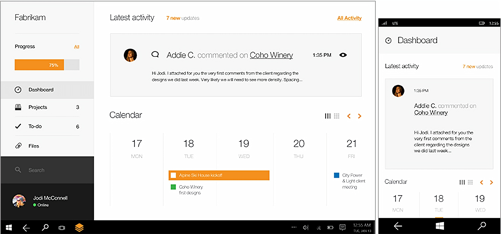Xamarin.Forms
Xamarin предоставляет набор инструментов для разработки графических приложений для разнообразных платформ: Android, iOS, UWP и MacOS (Linux не поддерживается).
С помощью Xamarin можно разрабатывать кроссплатформенные приложения с единой кодовой базой. Логика пишется на C#, интерфейс описывается с помощью XAML (кроме MacOS, там используется свой Interface Builder).
Xamarin больше заточен под разработку мобильных приложений.
Xamarin
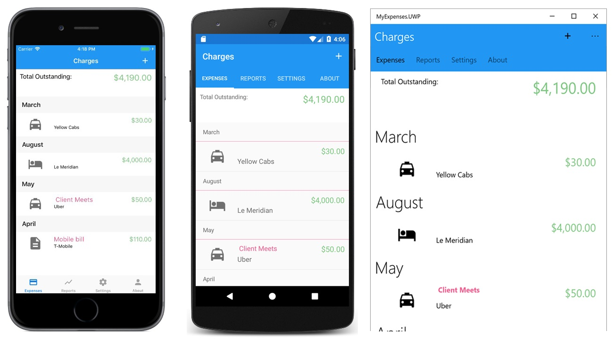WPF
Главные особенности WPF:
- Аппаратное ускорение
- Независимость от разрешения
- Полная кастомизация элементов управления
- Интерфейс с помощью XAML
- Богатая библиотека классов для любых задач
Аппаратное ускорение
Все рисование WPF выполняется через DirectX, что позволяет этой технологии пользоваться преимущества современных видеокарт.
Независимость от разрешения
Технология WPF настолько гибкая, что может автоматически выполнять масштабирование, приспосабливаясь к любому монитору, в зависимости от системных установок DPI.
Полная кастомизация элементов управления
В отличии от Windows Forms, или других технологий разработки графического интерфейса прошлого поколения, элементы управления WPF определяют только свою функциональность, и не имеют жестко привязанного внешнего вида.
Пользователь может описывать любой свой способ визуализации стандартных элементов управления, или же создавать собственные, принципиально новые элементы интерфейса.
Интерфейс с помощью XAML
XAML — стандарт языка разметки, который используется для определения пользовательских интерфейсов WPF.
Язык XAML позволяет строить окна без обычного кода.
С помощью XAML можно создавать привязки данных из программного кода к элементам управления, описывать триггеры для анимаций, формировать стили отображения, и многое другое.
Богатая библиотека классов для любых задач
Весь WPF - это, по сути, внушительный набор из разных классов, связанных в общей иерархии.
Окна описываются классом окна, любой элемент управления - классом этого элемента управления, анимация - классом анимации, базовые графические фигуры - классами прямоугольника, эллипса и т.д.
С помощью стандартных классов можно решить практически любую задачу, а если нет, то можно написать свой класс, расширяющий какой-либо из встроенных в библиотеку.
Создание проекта
Visual C# -> Классическое приложение Windows -> Приложение WPF

Интерфейс

Запуск
Можно сразу запустит проект (Ctrl + F5), и полюбоваться пустым окном:

Структура проекта
Начнём с обозревателя решений.

App.config - манифест приложения, его пока не трогаем.
Для каждого вашего класса элемента управления, окна или приложения, помомо обычного .cs файла, создаётся .xaml файл XAML разметки.
В обозревателе .cs файлы находятся внутри .xaml файлов, как внутри директории.
Класс Application
Каркасом любого WPF приложения должен быть класс, производный от класса Application.
Это как функция Main в консольных приложениях. Это то, что создаётся при запуске программы. Он может быть пустым, этого всё равно будет достаточно. Система сама сделает всё необходимое на основании методов, полученных от базового класса.
using System.Windows;
namespace TestWpfApp1
{
/// <summary>
/// Логика взаимодействия для App.xaml
/// </summary>
public partial class App : Application
{
}
}
Ключевое слово partial
Этот класс помечен ключевым словом partial, с которым мы ещё не сталкивались.
Ключевое слово partial обозначает, что определение этого класса разбито на несколько файлов.
Т.е. в этом файле лишь часть описания класса App.
Где же вторая часть?
В XAML файле.
XAML файл
Файл app.xaml содержит следующую разметку:
<Application x:Class="TestWpfApp1.App"
xmlns="http://schemas.microsoft.com/winfx/2006/xaml/presentation"
xmlns:x="http://schemas.microsoft.com/winfx/2006/xaml"
xmlns:local="clr-namespace:TestWpfApp1"
StartupUri="MainWindow.xaml">
<Application.Resources>
</Application.Resources>
</Application>
Это вторая часть описания класса App, описанная с помощью декларативной разметки XAML.
В ней можно увидеть атрибут StartupUri со значением MainWindow.xaml - это задан класс окна, который будет запускаться при старте приложения.
Класс Window
Второй созданный по умолчанию и обязательный для WPF приложения класс - класс Window, который представляет собой окно (разработка настольного приложения с графическим интерфейсом - это, по сути, разработка окна).
Поскольку вам нужен интерфейс, то вы создаёте (или Visual Studio за вас) свой класс окна, по умолчанию MainWindow, производный от библиотечного класса окна Window.
Он тоже partial, и описан в двух файлах: код на C# в файле MainWindow.xaml.cs и разметка XAML в файле MainWindow.xaml.
Файл MainWindow.xaml.cs
Изначально в MainWindow.xaml.cs следующий код:
using System.Windows.Input;
using System.Windows.Media;
using System.Windows.Media.Imaging;
using System.Windows.Navigation;
using System.Windows.Shapes;
namespace TestWpfApp1
{
/// <summary>
/// Логика взаимодействия для MainWindow.xaml
/// </summary>
public partial class MainWindow : Window
{
public MainWindow()
{
InitializeComponent();
}
}
}
Здесь тоже практически ничего нет (но это пока).
Графический конструктор
При открытии XAML файла класса окна, в редакторе разворачивается следующая картина:

Графический конструктор
Графический конструктор (или дизайнер) предназначен для визуального редактирования графического интерфейса (в данном случае - интерфейса окна, но он также применяется и для отдельных пользовательских элементов управления).
И пользоваться, конечно, мы будем им, а не ручным способом описания XAML разметки.
В Visual Studio создан великолепный визуальный конструктор, с помощью которого можно сделать практически все основные операции, не прибегая к ручному редактированию разметки.
Все изменения, вносимые в визуальном конструкторе, сразу же отображаются на XAML разметке. И, соответственно, изменения, вносимые в XAML разметку, так же переносятся на визуальное отображение.
Переключение
Для того, чтобы переключаться между отображением файла C# и связанного с ним XAML файла можно использовать горячие клавиши F7 и Shift + F7.
Управление макетом XAML редактора
Если у вас куда-то пропал визуальный редактор, не пугайтесь, скорее всего, вы нажали что-то из этих клавиш:

Кнопки XAML и Конструктор переключают фокус на соответствующие вкладки, а двойное нажатие раскрывает выбранный тип редактора на весь экран.
Чтобы вернуть скрытый редактор нужно нажать самую правую кнопку - маленький квадратик собой стрелочками внутри.
Кнопки с палками | и - позволяют управлять расположением двух редакторов.
Панель элементов

Для работы с графическим дизайнером важным инструментом является Панель элементов, которая содержит все доступные для расположения на окне элементы управления.
Если у вас этого окна нет, нужно открыть его через раздел меню Вид:
Вид -> Панель элементов.
Панель свойств

Второй необходимый для работы компонент - Панель свойств, на которой отображаются все свойства выбранного в графическом редакторе элемента управления.
Вид -> Окно Свойств (или хоткей F4)
Через эту панель все значения свойств можно редактировать.
Классы и объекты
При добавлении элемента управления в интерфейс окна вы создаёте объект класса этого элемента управления. Все свойства, которые вы видите на Панели Свойств - это свойства класса, и меняя в них значения, вы меняете значения в свойствах соответствующего объекта.
Добавление элементов управления
Для того, чтобы добавить элемент управления на макет окна, достаточно мышкой перетянуть его из Панели элеентов на поверхность окна.
Элементы управления, уже находящиеся в окне, мышкой в конструкторе можно выделять, перемещать и масштабировать.
Для того, чтобы убрать элемент управления, нужно выбрать его и нажать Delete (или ПКМ -> Удалить).
Все сломалось!
В графическом редакторе работают кнопки Отменить и Вернуть, так что смело можете нажимать Ctrl+Z и Ctrl+Y, когда сделаете что-нибудь не то.
Интерфейс пользователя
Задачей любого пользовательского интерфейса является взаимодействие с пользователем, или же предоставлени пользователю возможностей взаимодействия с программой.
Интерфейс строится из составных блоков - элементов управления. Каждый элемент управления предназначен для какого-либо взаимодействия с пользователем.
Элементы управления
Все элементы, доступные для размещения в области интерфейса, можно разделить на 2 категории:
- Обычные элементы управления
- Элементы компоновки
Обычные элементы управления
В свою очередь, обычные элементы управления делятся на:
- Элементы управления содержимым
- Элементы управления содержимым с заголовками
- Текстовые элементы управления
- Элементы управления списком
- Элементы управления диапазонами значений
- Элементы управления датами
- И прочие
Элементы управления содержимым
К элементам управления содержимым относятся:
- Label (метки)
- Button (кнопки)
- CheckBox (чекбоксы)
- RadioButton (эээ.. радиокнопки?)
Главной особенностью всех элементов управления содержимым является то, что такие элементы могут содержать внутри себя любой другой элемент интерфейса (только один!).
Пример, забегая вперёд:
Внутрь кнопки мы можем поместить сетку Grid, в которую вложить метку Label и картинку Image. Получится кнопка, внутри которой будет текст с картинкой.
Метки Label
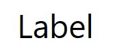Label - статический элемент управления, по умолчанию содержащий неизменяемый текст.
Но вместо текста есть возможность вложить в него любой другой элемент управления.
Примеры Label
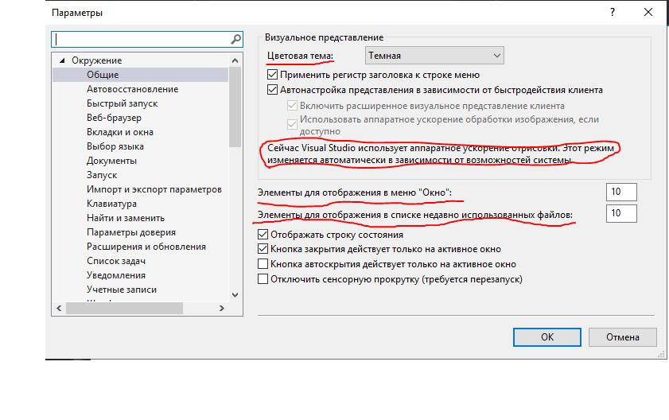Кнопки Button

Button - обычная кнопка, для того чтобы пользователь мог нажимать на неё.
Примеры Button

Чекбоксы CheckBox

CheckBox - переключатель. Кнопка с двумя состояниями: активирована / не активирована.
Также рядом с кнопкой отображается текстовая надпись (вместо надписи можно вложить другой элемент управления).
Примеры CheckBox
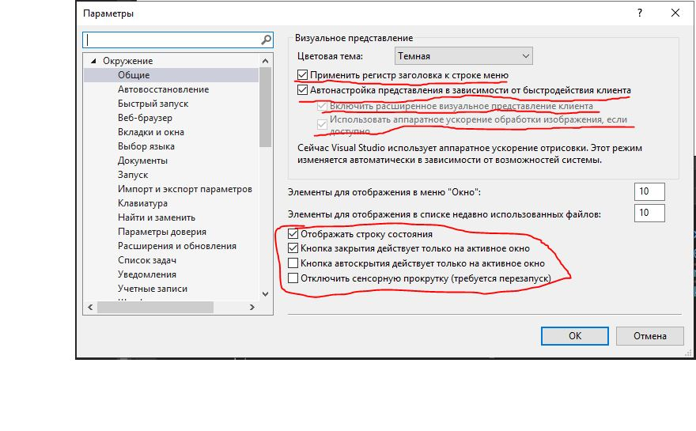Радиобаттон Radiobutton
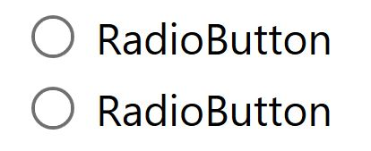Radiobutton похожи на чекбоксы, это такая же кнопка, которая может быть активирована или не активирована (правда, кнопка тут по умолчанию круглая).
Главной особенностью является то, что Radiobutton всегда применяются в группе из нескольких штук. И в группе радиобаттонов активным может быть только одна кнопка.
Они используются тогда, когда нужно дать пользователю выбор одного из нескольких вариантов.
Примеры Radiobutton
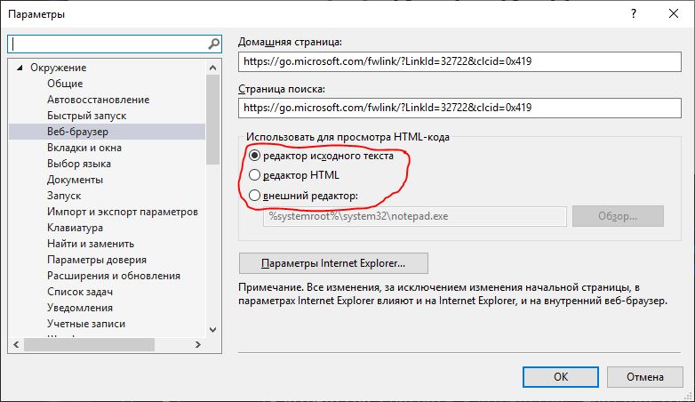Элементы управления содержимым с заголовками
К этим элементам управления относятся:
- GroupBox (группа)
- TabItem (вкладка)
- Expander (раскрывающаяся штучка)
Также как и простые элементы управления содержимым, они могут содержать в себе один другой элемент управления. Но ещё у них есть элемент заголовка, который также может содержать один другой элемент управления.
Группа GroupBox
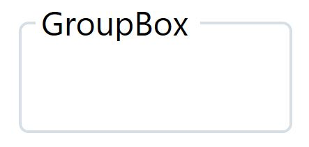GroupBox используется для группировки других логически связанных между собой элементов управления.
Поскольку в GroupBox можно вложить только один элемент управления, обычно в него вкладывают контейнер компоновки, в котором уже находятся все остальные элементы управления.
По умолчанию заголовок GroupBox содержит текст, но туда можно поместить что угодно.
Пример GroupBox

Вкладка TabItem

Сначала нужно оговориться, что вкладки (TabItem) могут помещаться только внутрь контейнера вкладок - элемента управления TabControl. Этот элемент управления предназначен только для хранения вкладок.
Сами вкладки создаются с помощью элемента TabItem. Один TabItem представляет собой одну вкладку.
TabItem также состоит из 1 элемента в заголовке и 1 элемента в контенте.
Пример TabItem
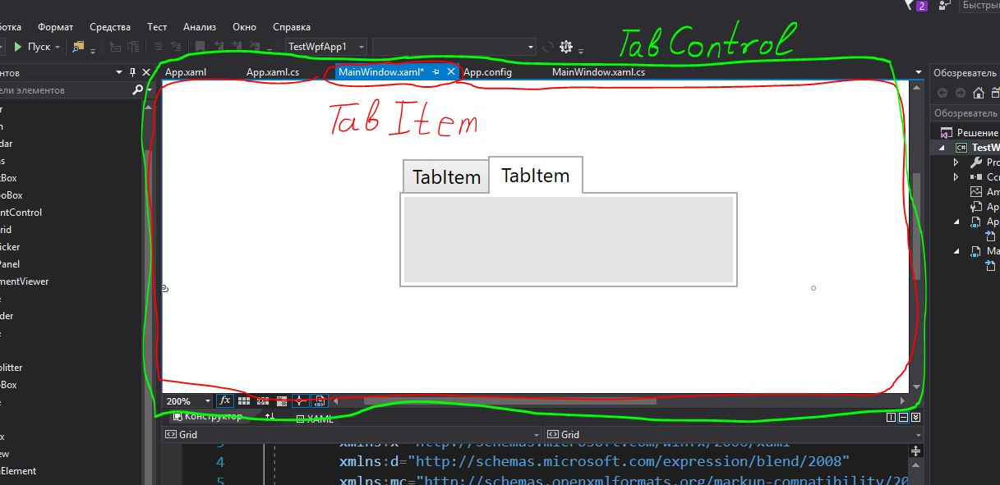Раскрывающийся Expander
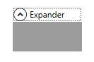Expander - элемент управления, предназначенный для создания блока элементов с возможностью сворачивания/разворачивания.
В него тоже обычно помещается контейнер компоновки.
Пример Expander

Текстовые элементы управления
К текстовым элементам управления относятся:
- TextBox (текстовое поле)
- TextBlock (просто текст)
- PasswordBox (текстовое поле для паролей)
- RichTextBox (поле для красочного текста)
Разумеется, отличительной особенностью этих элементов управления является то, что они могут содержать в себе только текст.
Текстовое поле TextBox
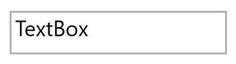TextBox - базовый элемент для пользовательского ввода, поле в которое можно вводить значение.
Пример TextBox
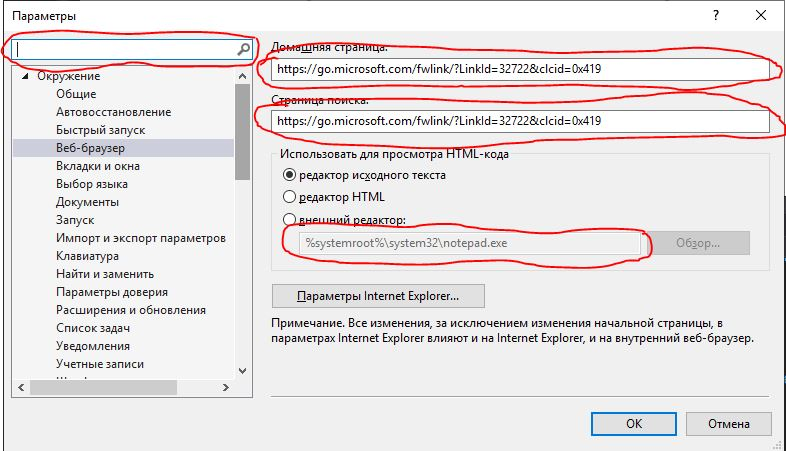Текст TextBlock
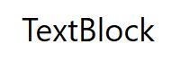TextBlock предназначен для отображения статического текста, на содержание которого пользователь никак повлиять не может.
Для создания надписей в интерфейсе в WPF рекомендуется использовать именно его, а не Label.
Примеры TextBlock
Текстовое поле для паролей PasswordBox

Элемент управлений PasswordBox предназначен, как можно догадаться, для ввода пользователем паролей и другой секретной информации.
Весь текст, вводимый в это поле, отображается звёздочками, чтобы его нельзя было прочитать со стороны.
Также там используются дополнительные механизмы защиты, что делает его более безопасным по отношению к некоторым видам атак.
Примеры PasswordBox

Поле для красочного текста RichTextBox
RichTextBox - интересный элемент управления для отображения сложно структурированного текстового содержимого с вложениями.
Он позволяет форматировать текст по подобию Word-а.
Элементы управления списком
Это:
- ListBox (список)
- ComboBox (выпадающий список)
Основной задачей элеменов управления списком является отображение коллекции (набора) значений.
Список ListBox
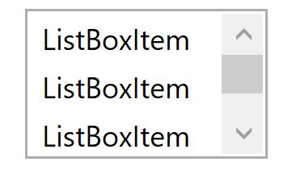ListBox - элемен управления, в котором отображается список из множества элементов. Как правило, ListBox используется, когда нужно показать большое количество значений, и этот список играет ключевую роль в интерфейсе пользователя.
Элементы в ListBox можно выбирать. Допускаются режимы одиночного и множественного выбора.
ListBoxItem
Внутри ListBox содержатся только элементы ListBoxItem. Они являются элементами управления содержимым, это значит, могут содержать в себе 1 другой элемент управления.
Но, по умолчанию, в них содержится просто текст.
Пример ListBox
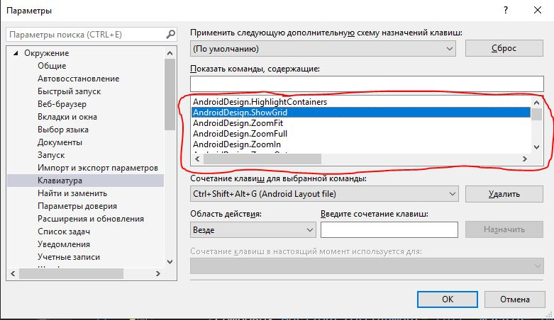Выпадающий список ComboBox
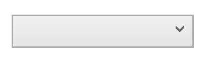ComboBox так же содержит список элементов, но не отображает весь список на экране, а выводит его только при нажатии на ComboBox.
В ComboBox можно выбрать только один элемент из списка, и этот выбранный элемент отображается в основной области ComboBox-а.
Обычно используется для небольших списков, когда эти списки не являются главным элементом на окне.
Пример ComboBox
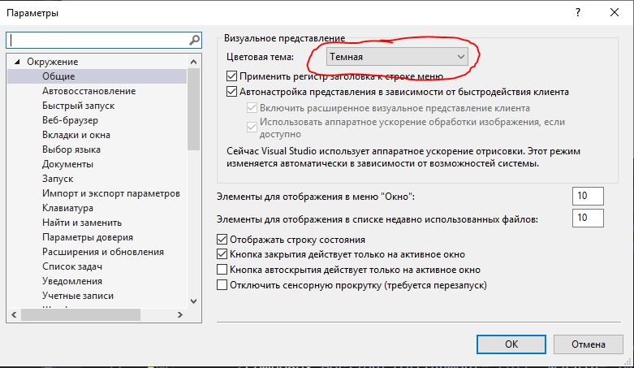Элементы управления диапазонами значений
- ProgressBar (индикатор выполнения)
- Slider (слайдер)
Эти элементы управления хранят числовое значение с заданными минимальной и максимальной границей, и отображают относительное положение текщего значения к этим границам.
Индикатор выполнения ProgressBar

Индикатор выполнения не позволяет пользователю изменять хранимое значение. Значение обычно изменяется программно, для отображения выполнения какого-нибудь процесса.
Используется при наличии каких-либо длительных действий, чтобы пользователь видел, что дело движется, а не стоит на месте.
Пример ProgressBar

Слайдер Slider

Slider имеет ползунок, с помощью которого пользователь может менять хранящееся в нём значение.
Слайдеры применяются тогда, когда нужно выбирать значение из большого диапазона, и точность выбранного значения не является критическим фактором (потому что на слайдере трудно выбрать конкретное значение).
Пример Slider

Элементы управления датами
К ним относятся:
- Calendar (календарь)
- DatePicker (свёрнутый календарь)
Ну, тут всё понятно, они нужны для ввода даты.
Содержат в себе значение DateTime.
Календарь DatePicker

Свёрнутый календарь DatePicker